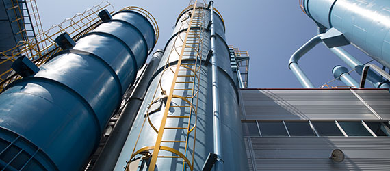
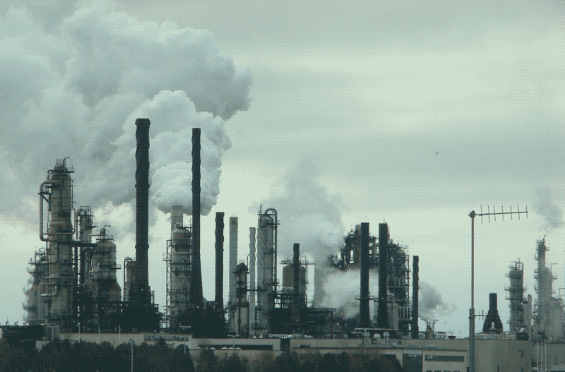
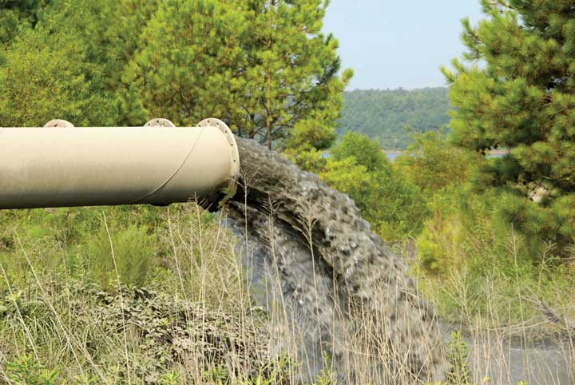
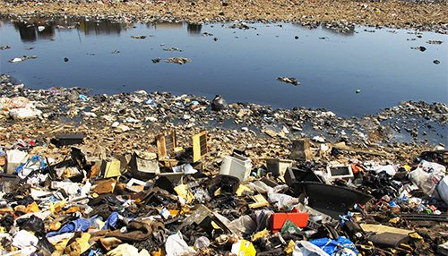
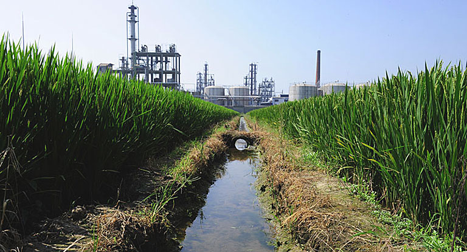
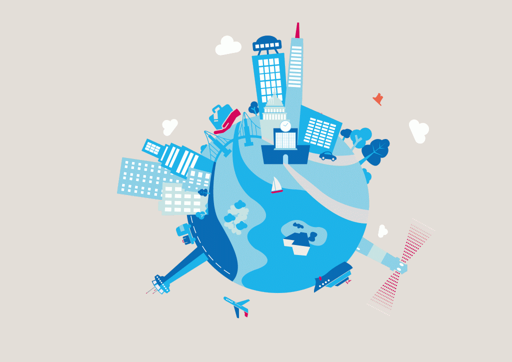

Industries can also be identified by product, such as: construction industry, chemical industry, petroleum industry,
automotive industry, electronic industry, power engineering and power manufacturing (such as gas or wind turbines),
meatpacking industry, hospitality industry, food industry, fish industry, software industry, paper industry, entertainment
industry, semiconductor industry, cultural industry, and poverty industry.
An industrial society can be defined in many ways. Today, industry is an important part of most societies and nations.
A government must have some kind of industrial policy, regulating industrial placement, industrial pollution, financing
and industrial labour.
With the coming of the Industrial Revolution, humans were able to advance further into the 21st century.
Technology developed rapidly, science became advanced and the manufacturing age came into view.Earlier, industries were small
factories that produced smoke as the main pollutant.
However, since the number of factories were limited and worked only a certain number of hours a day, the levels of pollution
did not grow significantly. But when these factories became full scale industries and manufacturing units, the issue of
industrial pollution started to take on more importance.
Countries facing sudden and rapid growth of such industries are finding it to be a serious problem which has to be brought
under control immediately.
Causes of Industrial Pollution
Lack of Policies to Control Pollution: Lack of effective policies and poor enforcement drive allowed many industries to bypass
laws made by pollution control board which resulted in mass scale pollution that affected lives of many people.
Unplanned Industrial Growth: In most industrial townships, unplanned growth took place wherein those companies flouted rules and
norms and polluted the environment with both air and water pollution.
Use of Outdated Technologies: Most industries still rely on old technologies to produce products that generate large amount of
waste. To avoid high cost and expenditure, many companies still make use of traditional technologies to produce high end
products.


Presence of Large Number of Small Scale Industries: Many small scale industries and factories that don't have enough capital
and rely on government grants to run their day-to-day businesses often escape environment regulations and release large amount
of toxic gases in the atmosphere.
Inefficient Waste Disposal: Water pollution and soil pollution are often caused directly due to inefficiency in disposal of
waste. Long term exposure to polluted air and water causes chronic health problems, making the issue of industrial pollution
into a severe one. It also lowers the air quality in surrounding areas which causes many respiratory disorders.
Leaching of Resources From Our Natural World: Industries do require large amount of raw material to make them into finished
products. This requires extraction of minerals from beneath the earth. The extracted minerals can cause soil pollution when
spilled on the earth. Leaks from vessels can cause oil spills that may prove harmful for marine life.
Effects of Industrial Pollution
Water Pollution: The effects of industrial pollution are far reaching and liable to affect the eco-system for many years
to come. Most industries require large amounts of water for their work. When involved in a series of processes, the water
comes into contact with heavy metals, harmful chemicals, radioactive waste and even organic sludge.
These are either dumped into open oceans or rivers. As a result, many of our water sources have high amount of industrial
waste in them which seriously impacts the health of our eco-system. The same water is then used by farmers for irrigation
purpose which affects the quality of food that is produced.Water pollution has already rendered many ground water resources
useless for humans and wildlife. It can at best be recycled for further usage in industries.
Soil Pollution: Soil pollution is creating problems in agriculture and destroying local vegetation. It also causes chronic
health issues to the people that come in contact with such soil on a daily basis.
Air Pollution: Air pollution has led to a steep increase in various illnesses and it continues to affect us on a daily basis.
With so many small, mid and large scale industries coming up, air pollution has taken toll on the health of the people and
the environment.
Wildlife Extinction: By and large, the issue of industrial pollution shows us that it causes natural rhythms and patterns to
fail, meaning that the wildlife is getting affected in a severe manner. Habitats are being lost, species are becoming extinct
and it is harder for the environment to recover from each natural disaster. Major industrial accidents like oil spills, fires,
leak of radioactive material and damage to property are harder to clean-up as they have a higher impact in a shorter span of
time.
Global Warming: With the rise in industrial pollution, global warming has been increasing at a steady pace. Smoke and
greenhouse gases are being released by industries into the air which causes increase in global warming. Melting of glaciers,
extinction of polar beers, floods, tsunamis, hurricanes are few of the effects of global warming.



What are the top manufacturing countries?

Taiwan
Mexico
South Korea
India
Japan
Germany
China
United States
The largest manufacturing industries in the United States by revenue include petroleum, steel, automobiles, aerospace,
telecommunications, chemicals, electronics, food processing, consumer goods, lumber, and mining. A large portion of U.S.
industrial output, the United States leads the world in airplane manufacturing. By 2020 the U.S will overtake China to earn
the top spot for the most competitive nation in the world.
Although China overtook the U.S. as the world's largest manufacturing nation in 2010, the production margin between the two
countries has been razor-thin. However, new data indicates that China recently widened its lead as the top global producer.
Shenzen, which is located between Guangzhou and Hong Kong, is a large manufacturing center that has sprung up quickly.
According to the latest research from the United Nations, China has further outpaced its competitors in world manufacturing,
generating $2.9 trillion in output annually versus $2.43 trillion from the U.S., the world's second-largest manufacturing
economy.
The issue of industrial pollution concerns every nation on the planet. As a result, many steps have been taken to seek
permanent solutions to the problem. Better technology is being developed for disposal of waste and recycling as much polluted
water in the industries as possible. Organic methods are being used to clean the water and soil, such as using microbes that
naturally uses heavy metals and waste as feed. Policies are being pushed into place to prevent further misuse of land.
The charts of largest countries concerned
with industrial outputs